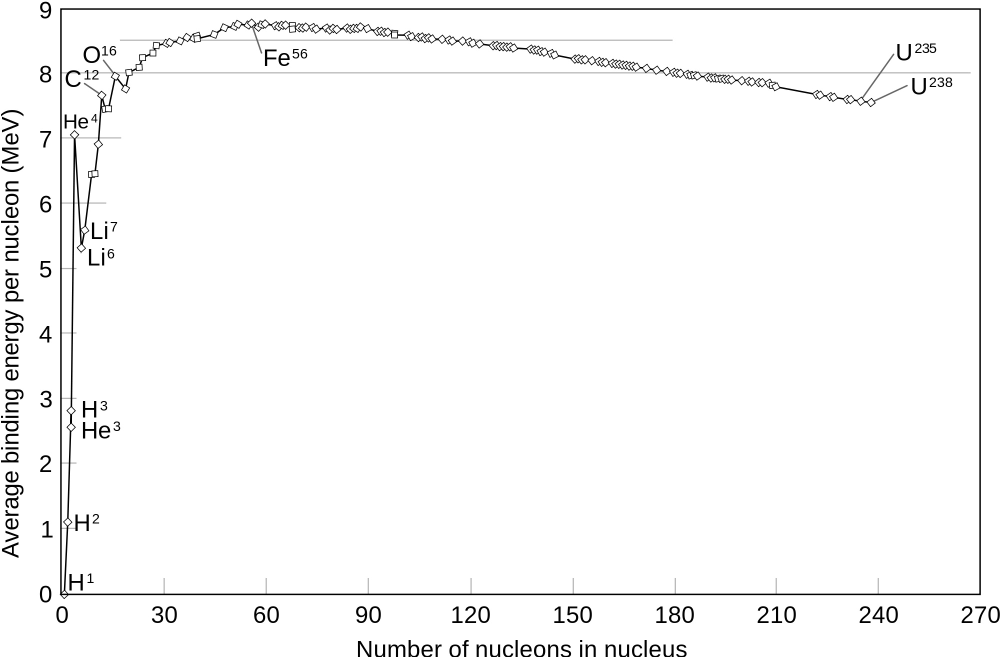
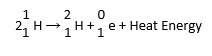
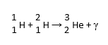
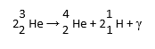
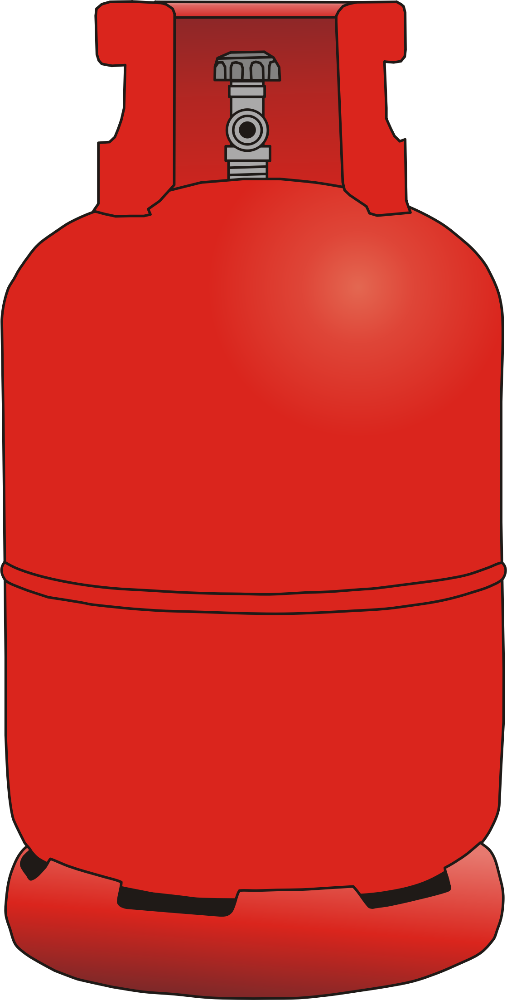
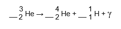
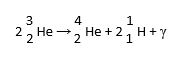

Nuclear Fission: a reaction in which a large nucleus becomes unstable and splits into smaller atoms with the release of a huge amount of energyNuclear Fusion: a reaction in which the nuclei of two small atoms come togetherto form a larger atom with the release of even bigger amounts of energy
TRANSCRIPT: Nuclear Fission: A reaction in which a large nucleus becomes unstable and spilts into smaller atoms with the release of a huge amont of energy. Nuclear Fusion: A reaction in which the nuclei of two small atoms come together to form a larger atom with the release of even bigger amounts of energy.
Binding Energy: the amount of energy holding an atom's nucleus together

TRANSCRIPT: The graph above shows the average binding energy of common atoms. Binding energy is the amount of energy holding an atom's nucleus together. As you can see, the difference in binding energy between Hydrogen and Helium is much greater than the difference in binding energy between two very large atoms. This is why nuclear fusion produces much larger amounts of energy.
Step 1 in Nuclear Fusion

TRANSCRIPT: In order to understand nuclear fusion, we'll look at the kind of nuclear fusion that happens in the sun. This is the first step. Two Hydrogen-1 atoms combine under the intense heat and pressure of the sun. This reaction forms one atom of Hydrogen-2 and one positron, or a positively charged electron. While this part of the nuclear fusion process is occurring, massive amounts of heat are being released to aid in making other reactions like this one possible.
Step 2 in Nuclear Fusion

TRANSCRIPT: In the second step of the nuclear fusion in the sun, another Hydrogen-1 atom combines with the Hydrogen-2 atom formed in the first step. This forms a Helium-3 atom and large amounts of gamma radiation (energy). It is important to note here that we have used a total of three Hydrogen-1 atoms in the first two steps. This is an example of how nuclear fusion needs a constant fuel source and does not necessarily create a chain reaction like in a nuclear fission reaction.
Step 3 in Nuclear Fusion

TRANSCRIPT: For the third and final step, each of the first two steps needs to occur twice, because two Helium-3 atoms are needed. The two Helium-3 atoms combine to form one Helium-4 atom (the desired product), 2 Hydrogen-1 atoms, and more gamma radiation. The fact that only two Hydrogen-1 atoms are produced when six of them are needed to complete this series of reactions shows how nuclear fusion requires a constant fuel source.
Effects of Harnessing the Power of Nuclear Fusion:
More stable isotopes, like Helium-4, can be formed; nuclear fission produces unstable isotopes
A huge amount of energy could be harnessed at one time
A reliable source of energy could be used to end the energy crisis
TRANSCRIPT: The effects of harnessing the power of nuclear fusion include forming more stable isotopes, like Helium-4, being able to produce and harness a huge amount of energy at one time, and having a reliable source of energy to help end the energy crisis.
1. Click the plus button to add Hydrogen-1 atoms
2. Drag the H-1 atoms on top of each other and click to make them react!
3. When different atoms appear, nuclear fusion has occurred! Experiment with the new particles to make new reactions
4. If atoms don't react when clicked, they weren't positioned correctly to have enough speed and pressure! Re-align them and try again
5. Once you've completed the nuclear fusion process, hit RESET to clear all atoms!
NEXT >

Hydrogen-1
RESET
NEXT
NEXT
NEXT
NEXT
NEXT
NEXT
NEXT
1. Which numbers correctly balance the equation?

A) 2,1,2
B) 2,1,1
C) 1,2,2
D) 2,2,2
Correct!
Incorrect.
You would need 2 Helium-3, 1 Helium-4, and 2 Hydrogen-1 to balance this equation.
2. Under what conditions is nuclear fusion possible?
A) High speed & velocity
B) High speed & pressure
C) High pressure & volume
D) High pressure & ionic charges
Correct!
Incorrect.
Nuclear fusion can only take place with high speed and high pressure particles,because of the huge amount of energy needed to add protons to a nucleus.
3. What kind of nuclei can undergo nuclear fusion?
A) Big nuclei
B) Nuclei with a positive net charge
C) Nuclei with a negative net charge
D) Small nuclei
Correct!
Incorrect.
Only fusing small nuclei produces energy. Fusing large nuclei provides for an energy deficit.
4. In the following reaction, what does the last symbol on the right signify?

A) The continuing fuel source
B) A Positron (positive electron)
C) Gamma waves
D) An incoming source of energy
Correct!
Incorrect.
Nuclear fusion reactions release gamma radiation as a product.
5. Which produces more energy?
A) Nuclear Fission
B) Nuclear Fusion
Correct!
Incorrect.
Nuclear fusion reactions release more energy than nuclear fission reactions.
6. True or False: Nuclear fusion has been utilized by man for industrial purposes, but not nuclear fission.
A) True
B) False
Correct!
Incorrect.
Nuclear fusion reactions are too powerful for human's current technology to control.
7. Which of the following would be an effect of human control of nuclear fusion's power?
A) Controlling huge amounts of energy
B) Creating large amounts of stable isotopes
C) Creating a reliable source of energy
D) All of the above
Correct!
Incorrect.
Controlling nuclear fusion would essentially eliminate the need for any other means of producing energy.